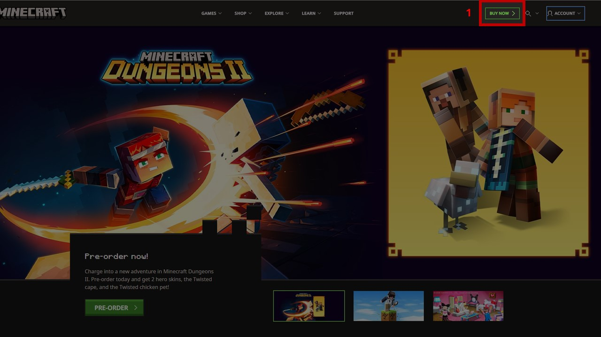
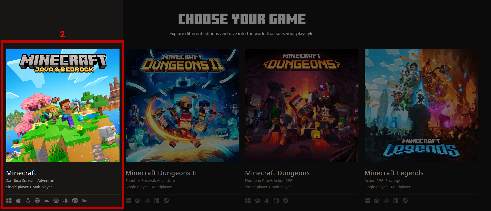
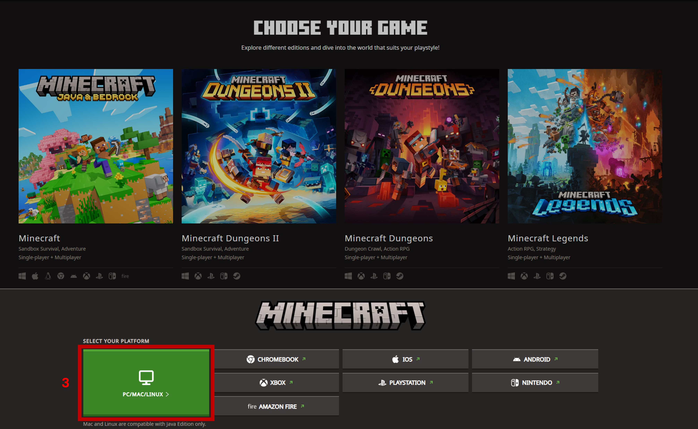
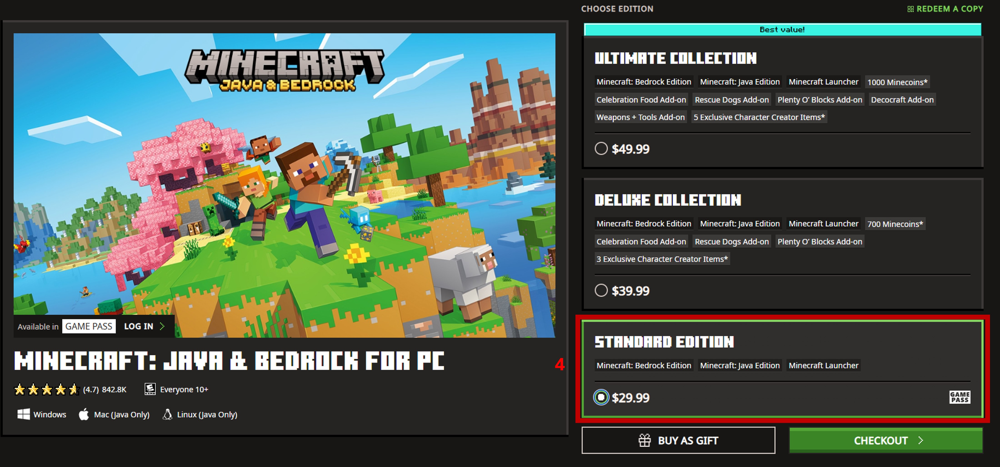
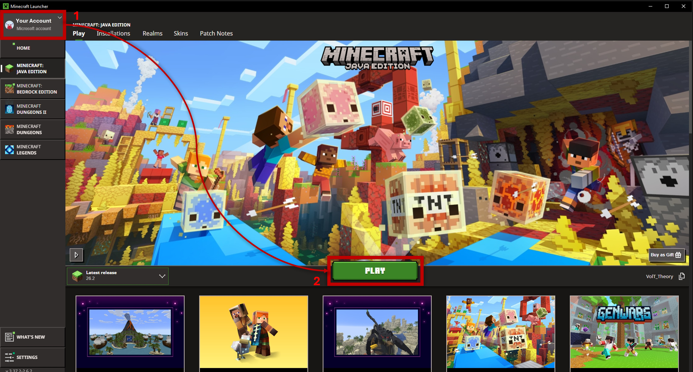

Installation Guide
Follow this walkthrough to buy Minecraft, set up Prism Launcher, import the server modpack, and join the game.
Buy Minecraft Java Edition
Go to minecraft.net and purchase Minecraft: Java & Bedrock Edition for PC.
- Buy the Standard Edition. You do not need the Deluxe or Ultimate collections (they only contain extra cosmetic Minecoins for Bedrock edition).
- Make sure you sign in with the Microsoft Account you plan to use for playing on the server.



-
Buy the Standard Edition. You do not need the Deluxe or Ultimate
collections (they only contain extra cosmetic Minecoins for Bedrock edition).

Install & Run Official Minecraft Launcher
Follow the prompts to download and install the official Minecraft Launcher.
Log into your Microsoft Account and Launch Minecraft
- Open the official launcher and log in using your Microsoft account (Top Left).
- Click Play to launch standard (vanilla) Minecraft at least once, until you reach the main game menu.
- Quit the game and close the official launcher.

Download Prism Launcher
Go to prismlauncher.org/download and grab the installer for your operating system (Windows, macOS, or Linux).
- If you are on Windows, select the x86 .exe option.
- If you are on an Apple Silicon Mac, select the universal .zip option.
Install Prism Launcher
Follow the installation prompts to install Prism Launcher on your system.
- When prompted about Regional Language localization, select continue.
- Pick whatever style icons you prefer, this is not important.
Launch Prism and Sign into your Microsoft Account
- Look for a dropdown menu in the top right.
- Click "Manage Accounts"
- Click "Add Microsoft" on the right side.
- Sign in with your Microsoft Account that owns Minecraft.
Download the Modpack File
Download the official server modpack archive directly from our wiki:
- Important: Do not unzip or extract the file after downloading. Prism Launcher reads
the
.ziparchive directly. - Save the file somewhere easy to locate, like your
Downloadsfolder.
Import Modpack into Prism Launcher
In Prism Launcher, click Add Instance in the top toolbar.
- In the window that opens, select the Import tab on the left sidebar (rather than CurseForge or Modrinth).
- Click the folder icon, navigate to your
Downloadsfolder, and select the modpack.zipfile you downloaded. - Give it a name (e.g.
ZCraft Server) and click OK. Prism will automatically configure the correct Minecraft version, Forge loader, and download all required mods.
Get Whitelisted & Connect to the Server
Send your exact Minecraft Username to the server admin so you can be added to the whitelist and receive the server IP.
- Double-click your instance in Prism Launcher to start Minecraft (first launch may take 2–3 minutes as Forge indexes all mods).
- From the main menu, click Multiplayer → Add Server.
- Enter the server address provided by the admin, click Done, and double-click the server to join!
What to Expect in This Modpack
Here is a quick overview of the main features installed on the server:
🗺️ Adventuring & Caving
Overhauled terrain with Tectonic, expanded caves, revamped structures (Temples, Mineshafts, Strongholds, Nether Fortresses), Sophisticated Backpacks for hauling loot, and The Aether dimension.
🌾 Trading & Farming
Animal Husbandry, Village Bounties, Trade Cycling, Farmer's Delight crops and cooking, Productive Bees, and Industrial Foregoing automation.
🏠 Building & Decor
Chipped and Chiseled add hundreds of new decorative block variants, while Supplementaries adds lanterns, shelves, and fine architectural details.
⚙️ Technology & Storage
Mekanism provides full tech progression and processing, while Refined Storage lets you store and search all your items in a single digital network.
Quality of Life Features
- Simple Voice Chat: Proximity voice chat active right when you join—just plug in a microphone!
- JEI (Just Enough Items): Search recipes, crafts, and item uses directly inside your inventory menu.
- Xaero's Minimap & World Map: Live map overlay with waypoint markers and death points.
- Waystones: Fast travel between discovered waypoints across the world.
- Charm of Undying: Keep your Totem of Undying equipped in a dedicated accessory slot.
- Crafting on a Stick & Client Sort: Instant inventory sorting and crafting without placing tables down.